11 Data in the sky at night
“The proportions and relations of things are just as much facts as the things themselves.”
Background The diamonds dataset from the R package ggplot2 provides data on each of almost \(54000\) round diamonds that were offered for sale.
Questions Do the data need cleaning? How are the individual variables distributed? Are there any special features?
Sources The data were originally scraped from the web in 2007 by Hadley Wickham (Wickham (2007)) and he made them available in his R package ggplot2.. Many of the results in this chapter were found and written up by him then in an article that was rejected by a journal that should have known better.
Structure The dataset covers 53940 round diamonds with information on price, dimensions, and quality.
11.1 Data on diamonds for sale
Experts talk of the four c’s of diamonds: carat, cut, colour, and clarity. These are the first four variables in the dataset. Carat is the weight of the stone (1 carat is 200 mg), while the other three c’s are ordered grades with 5, 7, and 8 levels respectively (in this dataset). Three measurements are included: length (x), width (y), and depth (z). Confusingly there is another variable actually called depth that is defined as total depth percentage and will be referred to as depthp here.
Diamonds may have one of ten shapes, either round or one of the nine fancy shapes. Only round diamonds are considered here.
A histogram of the lengths is shown in Figure 11.1. The green circle is to indicate that with a sharp eye a bar might be seen at zero. Histograms of large datasets like this are not good at representing bars with only a few points. There must be at least one point with a length much above 9 too. Boxplots, as in Figure 11.2, are better for displaying possible outliers. The default scaling of a histogram is to include enough of the axis to include all the data, so whether a bar at zero was visible or not, there had to be data somewhere out to the left (and to the right) and the boxplot shows where.
Code
names(diamonds)[c(5, 8:10)] <- c("depthp", "length", "width", "depth")
p1 <- ggplot(diamonds, aes(length)) + geom_histogram(fill="azure3", binwidth=0.25, boundary=0, closed="left") + annotate("point", x=0.125, y=0, colour="green", size=8, shape=1, stroke=3) + xlab(NULL) + ylab(NULL)
p2 <- ggplot(diamonds, aes("", length)) + geom_boxplot(outlier.colour = "red") + xlab(" ") + ylab(NULL) + theme(axis.ticks.y = element_blank()) + coord_flip()
p12 <- align_plots(p1, p2, align="v")
ggdraw(p12[[1]])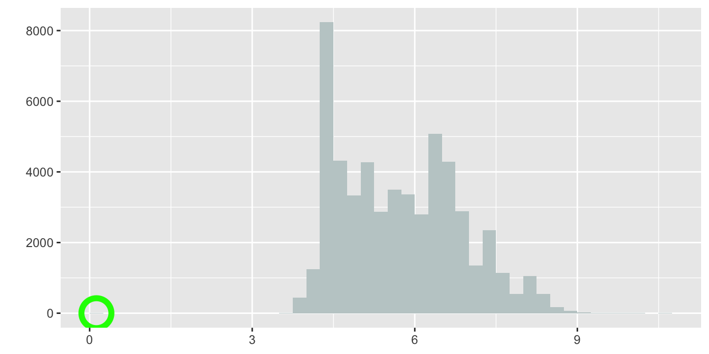
Figure 11.1: Histogram of diamond lengths (the bar at zero has been circled in green)
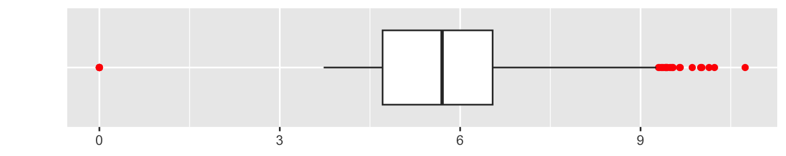
Figure 11.2: Boxplot of diamond lengths (outliers coloured red)
The lowest length values were checked and there were \(8\) diamonds of zero length. There were also some zero values reported for width and depth. The simplest solution was to remove these diamonds (unless the original data source could have been checked to find out the actual values). The scale of the vertical axis in Figure 11.1 goes up to over \(8000\), so a bar of height \(8\) will have a very small height in the plot, perhaps too small to be shown, depending on how big or small the plot is drawn.
Boxplots can be good for identifying possible outliers. Histograms are good for showing distributional shape—provided that informative binwidths are chosen. Redrawing Figure 11.1 after removing the diamonds of zero length and choosing a binwidth of \(0.05\) gives Figure 11.3.
Code
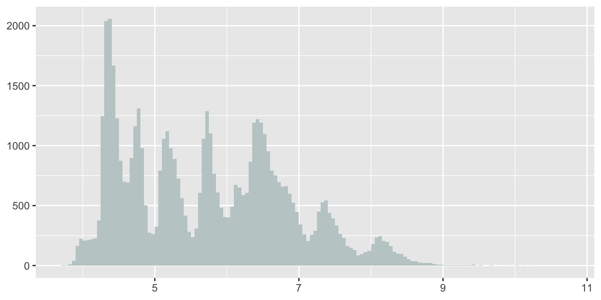
Figure 11.3: Histogram of diamond lengths (without the zero-length diamonds)
It looks as if there is a mixture of groups of diamonds. Similar patterns can be found for the widths and depths while a related, but different, pattern is apparent for the distribution of carats. The one-sided peaks in the display suggest that far more diamonds of a rounded number of carats are offered for sale than diamonds of just under a rounded number. Two round diamonds of the same number of carats will have similar lengths, widths, and depths and this is likely to be the explanation for the shapes of their distributions.
Code
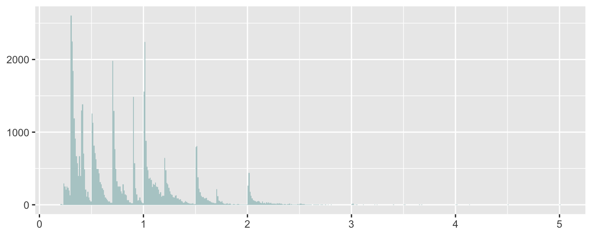
Figure 11.4: Histogram of diamond carats
The histogram binwidth was chosen to be the smallest possible, i.e. the same as the resolution of the data. If there is any pattern to be found in a large dataset, it will be shown at this level—provided the plot is big enough for the bars to be seen at that resolution. This just about works for price in Figure 11.5 and there is enough detail to see something else, an unexpected gap around $\(1500\).
Code
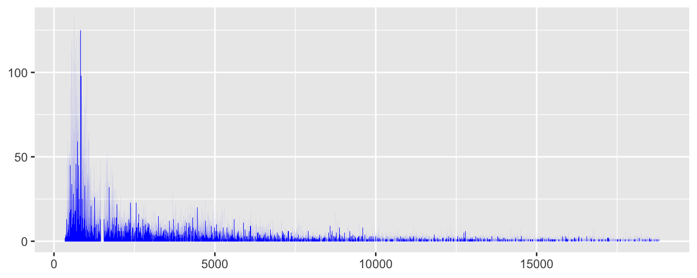
Figure 11.5: Histogram of diamond prices
Apparently there was a problem with scraping the data from the web that was not noticed early enough. There are no prices between $\(1455\) and $\(1545\), inclusive, in the dataset. The adjective `unexpected’ is important when talking about the gap. Features stand out that surprise us and they surprise us because they do not match expectations. You have to have expectations to be surprised.
11.2 Checking for outliers and unusual values
In all there are \(20\) diamonds with zero values for length, width or depth. All have zero depth, \(8\) have zero length, and of those \(8\), there are \(6\) with zero width. There are no other diamonds with zero width. These \(20\) cases must be errors and might be identified as outliers. Interestingly, outlier detection methods tend not to find them when the whole dataset is used to look for them, probably because they are not far enough away from the rest of the data in multivariate space. After removing the \(20\) zero cases there are still three extreme outliers, two cases with extremely high values of width and one with an extremely high value of depth.
After removing the outliers, a scatterplot matrix of carats and the three dimensions, length, width, and depth identifies other possible outliers. The scatterplots with carat are curved, as it is really a volume measurement, so the cube root of carat was used to get linear plots.
Code
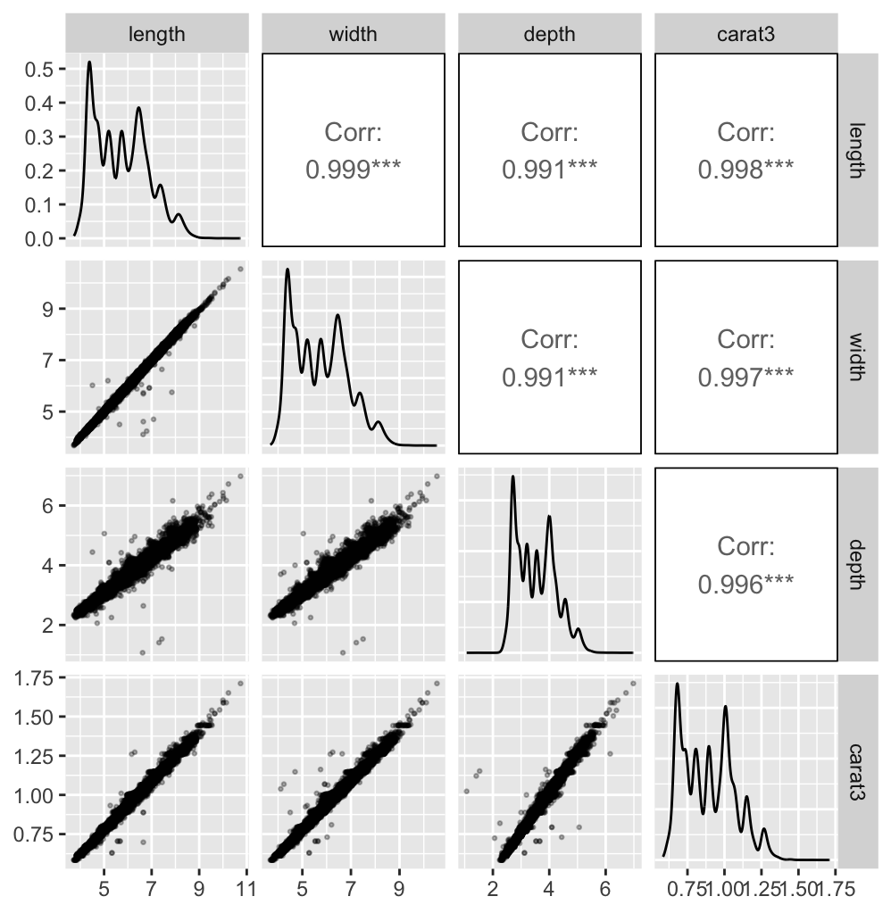
Figure 11.6: A scatterplot matrix of length, width, depth, and carats to the power one third for the dataset after removing the zero cases and three extreme high outliers
The correlations are all very high, despite the apparent variability. The reason is the size of the dataset. Most of the data are linearly related and hidden by overplotting. Several two-dimensional outliers are visible. The three lowest values of depth have middling values of length and width, so the problem is the depth measurement. There are a few other cases that seem too far away from the main body of the data. If a point is a two-dimensional outlier and not an outlier on either of the variables separately, then it could be an error on one or both of the variables or an unusual case. Outliers on individual dimensions are a problem for graphics because they distort the axes and shrink the space available for the main part of the data. This affects one-dimensional plots like histograms, but also higher dimensional displays like scatterplots and parallel coordinate plots.
Figure 11.7 shows a scatterplot matrix of carat with the other three continuous variables. An extreme outlier on the variable table has been excluded for the reason just mentioned. A few more cases appear to be outliers. The density estimate for table looks odd. Checking the frequencies of observed values in Figure 11.8 shows that most are integers.
Code
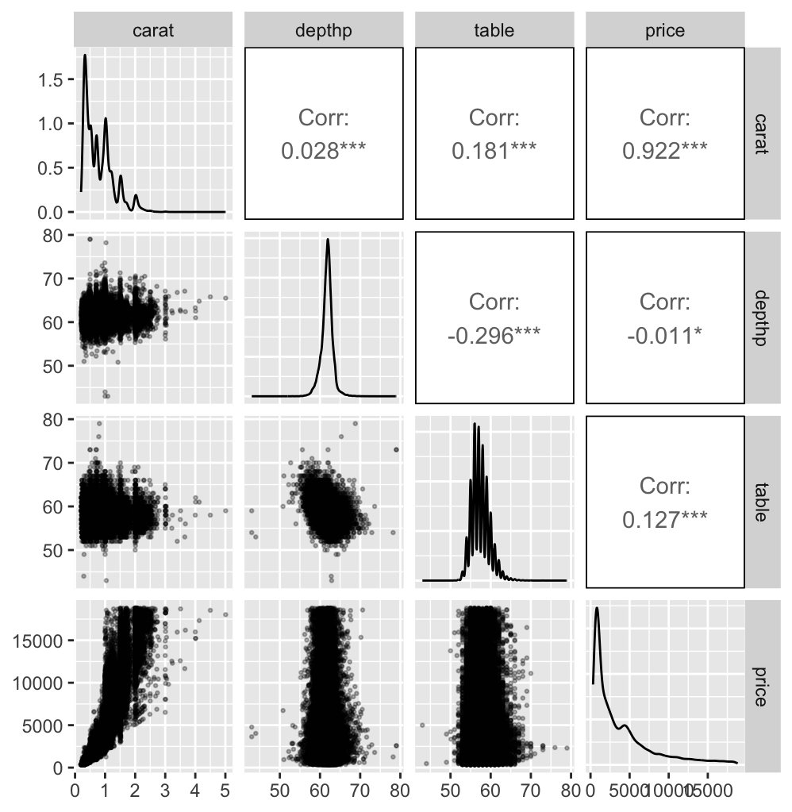
Figure 11.7: A scatterplot matrix of carat, percentage depth, table, and price for the dataset after removing the zero cases and four extreme outliers
Code
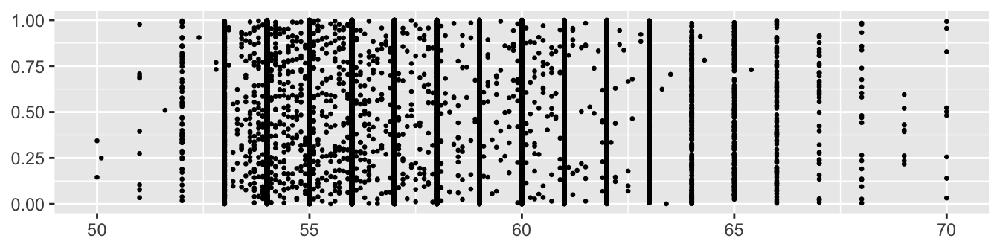
Figure 11.8: A vertically jittered dotplot of diamond table, excluding 12 outlying values, showing heaping at integer values
Figure 11.7 shows a few extreme values of percentage depth. According to the R help file for the dataset, percentage depth is calculated from the variables, length, width, and depth. Carrying out the calculation and plotting the reported percentage depth (depthp) against the newly calculated one (Depthp) gives Figure 11.9.
Code
d1a <- d1a %>% mutate(Depthp=round(200*depth/(length+width),1), DifDep=depthp-Depthp, difdep=(abs(DifDep)>1))
ggplot(d1a %>% arrange(difdep), aes(Depthp, depthp)) + geom_point(aes(colour=difdep), size=2) + scale_colour_manual(values=c("grey70", "red")) + theme(legend.position="none", axis.title.y=element_text(angle=0, vjust=0.5, hjust=0)) + coord_fixed(xlim=c(10,110), ylim=c(10,110)) + ylab("depthp ") + geom_abline(intercept=0, slope=1, lty="dashed", colour="grey70")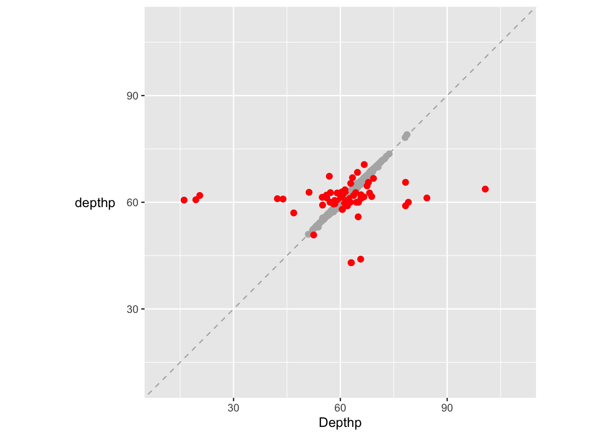
Figure 11.9: A scatterplot of reported percentage depth (depthp) and percentage depth calculated from the data (after removing the zero cases and three extreme outliers). Cases where the difference is bigger than 1 have been coloured red and drawn last.
There are 69 cases where the reported depth percentage and the calculated depth percentage differ by more than 1 and more detailed investigation of the four variables involved would be necessary to determine which cases to keep and/or correct.
11.3 Intriguing features
The scatterplots of price in Figure 11.7 look as if they have been flattened or bounded at the top. Figure 11.10 shows an enlarged version of the price-carat scatterplot with the implied boundary line added.
Code
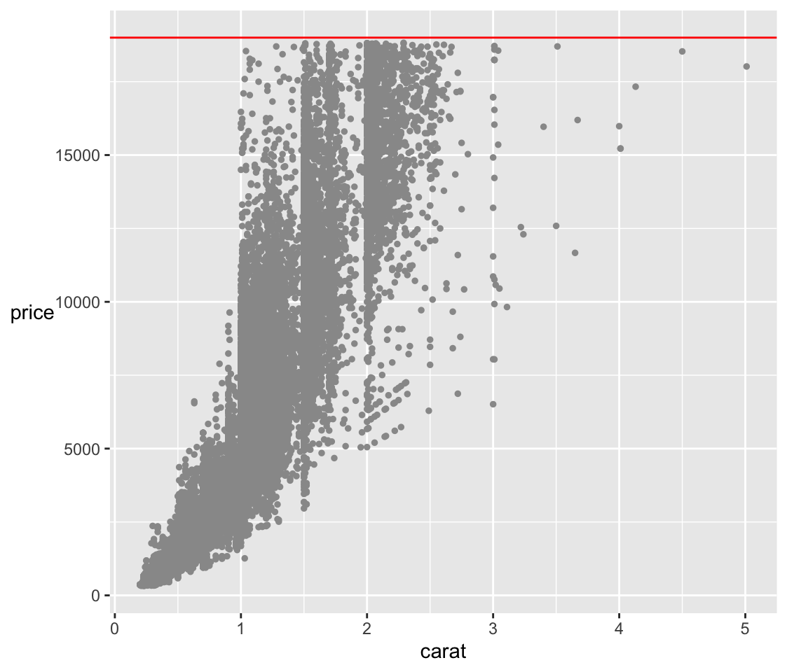
Figure 11.10: A scatterplot of price against carat with a red line at $19000, just above the maximum reported price.
Given that the data were scraped from a website selling diamonds, it could be that the scraping of the dataset was in the order of carat size and was stopped at some point. It seems more likely that very expensive gems were just not included. Those kinds of diamonds are probably sold in personal transactions. One of the effects of the boundary is that there are few larger diamonds in the dataset, as can be seen in Figure 11.10. Smaller diamonds of very high quality are doubtless not included either. This kind of bias should be taken into account when modelling the data.
Until now the three categorical variables in the dataset, cut, color, and clarity have been ignored. It is worth looking at their association with carat (i.e., the size of the diamond). Figure 11.11 suggests that there is a decline in the median carat size as clarity improves and an increase in the median carat size as colour quality decreases. The colour classification refers to how colourless a diamond is on a scale from D (best) down to Z. There are no examples of the poorer categories in the dataset.
Code
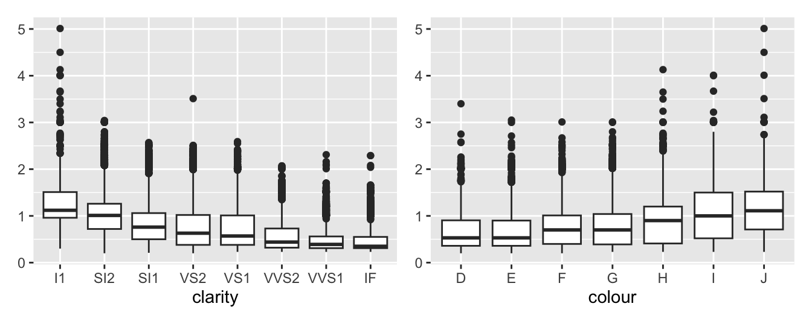
Figure 11.11: Boxplots of carat by clarity and by colour
One part of the explanation could be that bigger diamonds can be sold with poorer clarity or poorer colour. Another could be the effect of the price boundary so that bigger diamonds with better clarity or better colour would be too expensive to be included in the dataset. A similar effect, if not so strong, can be seen plotting carat by cut.
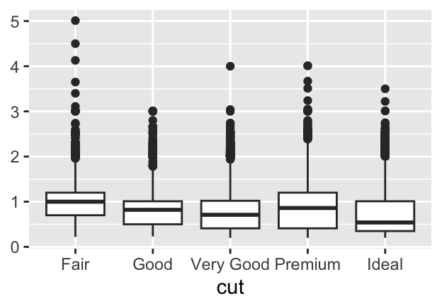
Figure 11.12: Boxplots of carat by cut
Answers There are a number of data cleaning issues such as impossible zero values, outliers, and missing price data. The distribution of carat values with one-sided peaks at rounded numbers is an unusual feature. The apparent upper limit on price will affect modelling.
Further questions What are the distributions of colour, cut and clarity? What influence do colour and cut have on price?
Graphical takeaways
- For large datasets choosing the narrowest histogram binwidth can reveal otherwise hidden information. (Figures 11.4 and 11.5)
- Individual outliers on one dimension affect higher dimensional plots as well. It is worth drawing new plots without them. (Figures 11.6, 11.7, and 11.9)
- Surprising plot shapes usually mean there is structure to be uncovered in the data. (Figure 11.7)
- Parallel boxplots are a quick and informative way of comparing groups. (Figure 11.11)